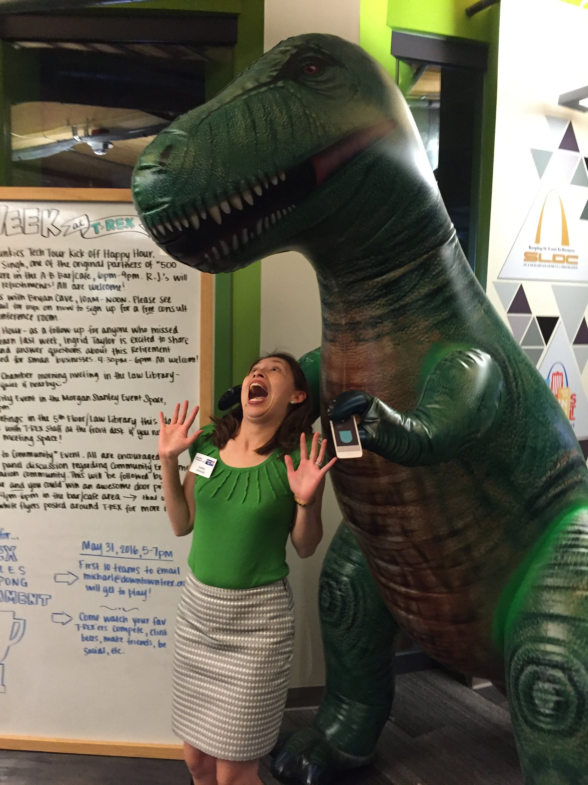
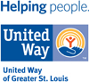
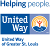
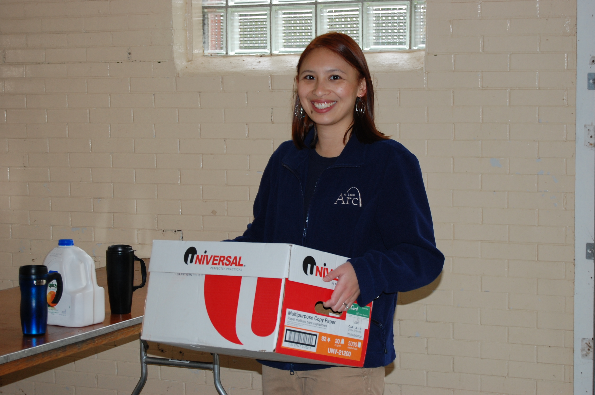
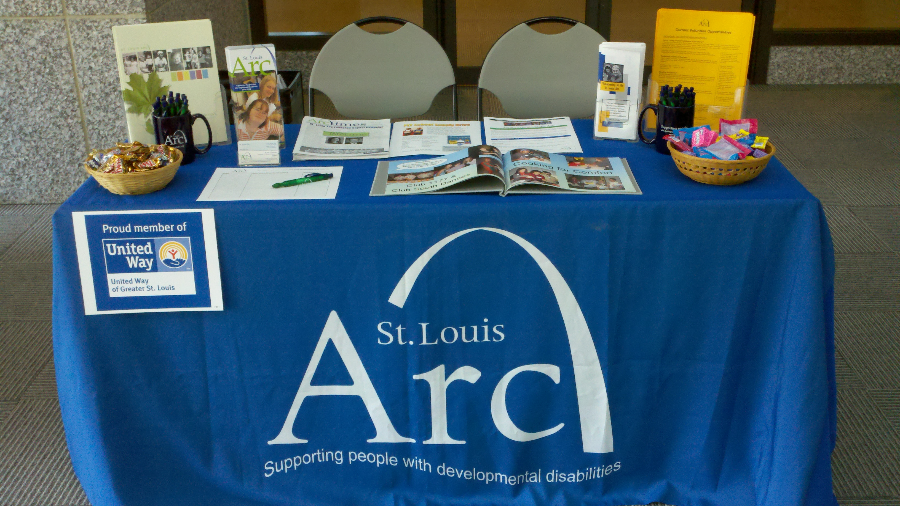
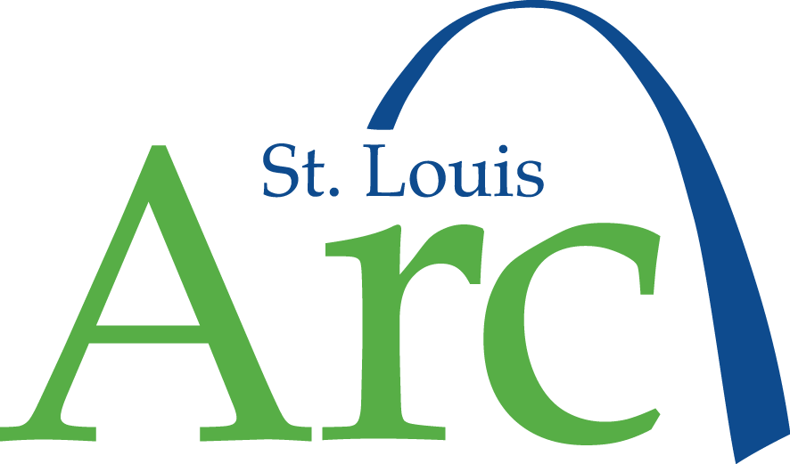

Audrey Schmook's Professional Background
Education
B.A. in Anthropology, minor in Modern Dance from Washington University in St. Louis
Chancellor's Certificate in Volunteer Management from University of Missouri-St. Louis
Work History
Visit my LinkedIn page for details
 United Way of Greater St. Louis
United Way of Greater St. Louis
Campaign Logistics Manager (2016-2017)
Lead Relationship Manager (2015-2016)
Relationship Manager (2014-2015)
Project Manager, MLK Day (2014)

St. Louis Arc
Coordinator of Volunteers and Community Outreach (2008-2012)
Administrative Manager (2007-2008)
Family Resource Center (now Family Forward)
AmeriCorps*VISTA Foster Care Program Organizer (2006-2007)